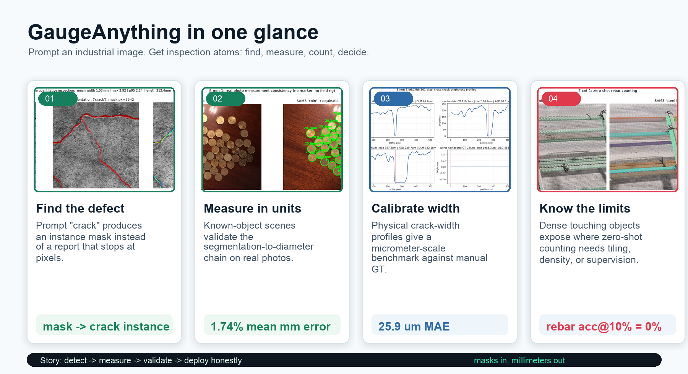
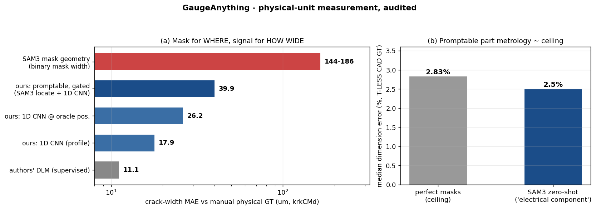
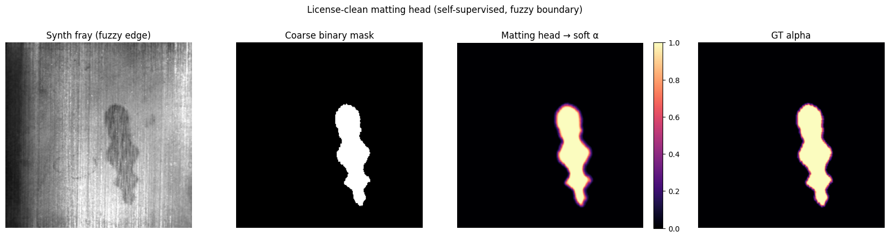
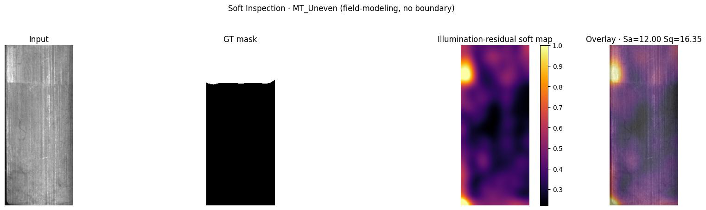
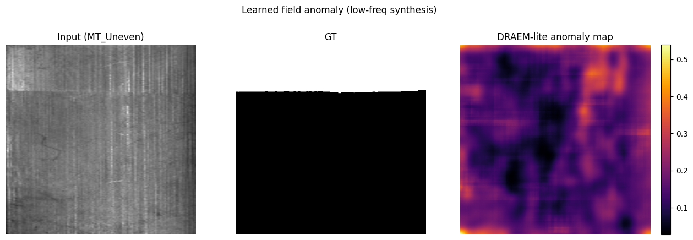
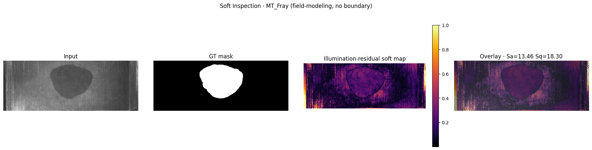
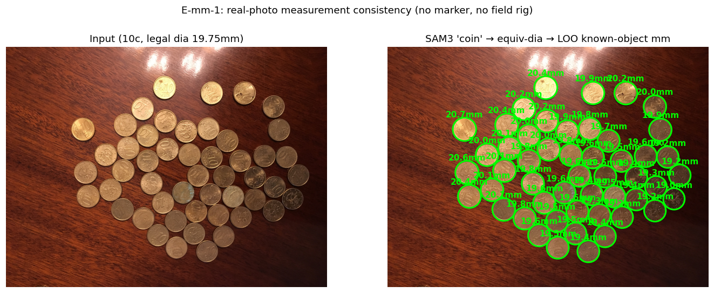
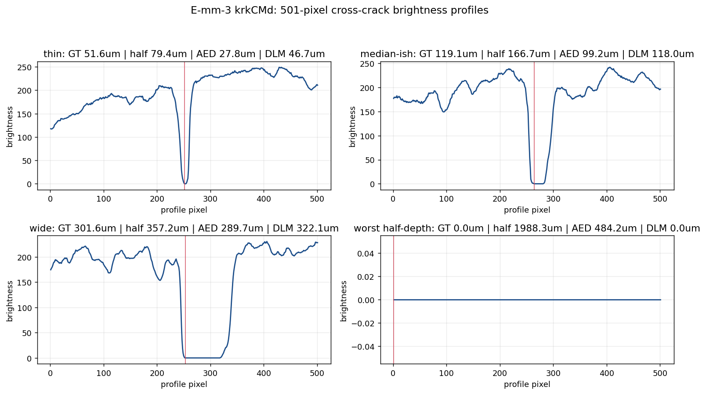

News ·
2026-06-12: paper draft v1 (PDF) and
5 task heads on HuggingFace;
signal-based width hits 23.2 μm median on physical GT ·
2026-06-11: open-source release with fully audited benchmarks
Field story
Not just "where is the defect?"
In the field, the next question is always quantitative: how wide, how many, how far apart, and what decision follows.
Visual concept for communication; exact reported numbers are in the audited tables below.
GaugeAnything turns perception into inspection atoms: find, measure, count, decide.
One-Glance Story
What GaugeAnything Adds
Segment Anything shows masks. Count Anything shows counts. GaugeAnything shows the inspection quantities that turn a mask into a field decision.

2.44×
SAM 3 zero-shot vs. classical crack segmentation (mIoU)
1.74%
real-photo coin known-object mm consistency (22 scenes, pass@5% 100%)
median physical crack-width error, promptable image→signal pipeline (localization-gated)
Abstract
Promptable foundation models — Segment Anything, Depth Anything, Count Anything — have generalized
the perception of industrial inspection, yet the metrology that drives field decisions
(crack width, bolt dimension, part spacing, condition grade) remains absent.
We present GaugeAnything, a pipeline that, from an image and a prompt
(noun phrase, exemplar, or point), emits instances, counts, metric dimensions (mm ± σ), and condition grades
as atomic, parallel outputs.
We pair the commercially usable SAM 3 backbone with a pixel→mm scale resolver (ArUco / bolt-head specs)
and a skeleton + distance-transform mask-geometry core. On real data (CrackSeg9k), SAM 3 zero-shot is
2.44× more accurate than classical crack segmentation (crack-only, 3 seeds), yet every method systematically under-estimates crack width
(SAM 3 by −22%), quantifying the absence of a measurement-ready model. For defects without a crisp boundary —
frayed edges and uneven (mura) brightness — binary segmentation collapses to chance (AUC≈0.50), and we show that
a regime-aware soft representation (matting for fuzzy edges, illumination-field modeling for boundaryless defects)
recovers signal that binary masks discard. We further validate the measurement chain with real-metric substitutes:
coin known-object scenes reach 1.74% mean error, and krkCMd profile-level crack-width evaluation reaches
27.8 ± 2.5 μm MAE (group 5-fold; leave-one-series worst 46.7 μm) against manual physical GT.
Finally, reading width from the raw intensity signal instead of mask geometry — mask for where, signal for how wide —
reaches 23.2 μm median physical crack-width error and 2.5% promptable part dimensions on T-LESS CAD GT.
All results are measured on an NVIDIA GB10.

Architecture
Compose → Specialize → Distill
A commercial backbone, a measurement core (green) that is our contribution, and a regime router that adapts to the boundary.
The metrology core crosses domains (concrete ↔ metal, width ↔ diameter) ·
SAM 3 generalizes to concrete-noun defects (crack, hole) ·
zero-shot fails on abstract texture anomalies (fray, uneven) — the motivation for the next section.
Beyond Binary
Soft Inspection — Three Regimes
The right tool depends on the boundary. Binary segmentation collapses to chance on fuzzy and boundaryless defects.
Boundary is blurred but present → alpha matting (α∈[0,1]) regresses the foreground/background mix.
Regime (b) · no boundary
uneven / mura · diffuse corrosion
No foreground to separate → illumination-field modeling. The residual of a smooth fit is the severity field.

Fuzzy regime (fray) → self-supervised matting head recovers the soft α, including the fragment the binary mask drops

Field regime (uneven) → illumination-residual soft map; column-detrend isolates the brightness field

Field regime (uneven) → learned anomaly (DRAEM-lite, low-frequency synthesis on normal tiles)

Fray → continuous anomaly map; the fuzzy edge calls for matting (smoothing destroys it)
Detection — boundaryless / fuzzy (AUC)
Defect
SAM 3 binary
Classical soft
Learned
Uneven (field)
0.499
0.669
0.636 DRAEM
Fray (fuzzy)
0.526
0.644
—
Binary ≈ 0.50 = chance (note: a binary mask is structurally limited on AUC; the primary evidence is IoU ≤ 0.03). Uneven numbers use a val/test split — configs chosen on val, reported on test.
Matting head — α fidelity (MAE ↓)
Representation
α-MAE on synthetic holdout
binary mask (synthetic)
0.2007
matting head, synthetic holdout
0.0100
v1 real fray transfer (mask IoU)
0.483 vs guided filter 0.860
v2 directional matting, real fray
0.949 vs guided filter 0.860
The first blob-synthesis head was an honest failure on real fray. Directional synthesis v2 fixes the transfer gap: learned matting reaches 0.949 IoU on real MT_Fray, above the guided filter anchor.
Honest note: a well-tuned classical illumination model is still strongest on the narrow uneven case; learned synthesis closes the gap. For fuzzy boundaries, directional matting v2 now transfers to real fray. The established result is that continuous representations beat binary, with the regime dictating the tool.
SAM 3 = 2.44× the best classical baseline (crack-only protocol, empty-GT excluded) · also wins detection (0.68 vs 0.00 clean rate on defect-free surfaces) · supervised U-Nets reach ~0.7+ — the claim is promptability, not SOTA
Measurement fidelity
Method
width MAE (px) ↓
width rel. ↓
GT 11.3px →
frangi
8.87
61.6%
2.4 px
adaptive
6.67
43.5%
5.0 px
SAM 3
5.67
62.9%
8.8 px
Best mIoU ≠ best measurement. Every method under-estimates width.
Metrology Rigor
Trust the Millimeters
Two failure modes that silently corrupt field measurements — quantified and fixed.
Camera tilt — naive scale vs. homography
tilt θ
naive mm/px err
PlaneScale (homography)
0°
0.6%
0.6%
30°
6.4%
1.0%
50°
19.3%
0.7%
The fronto-parallel assumption costs up to 19% error at field-typical tilts.
Mapping pixels through the marker-plane homography holds ≤1%.
Synthetic-geometric validation (ArUco 20 mm + 60 mm bar); real-mm capture is the next data milestone.
Prompt vocabulary — synonym collapse & rescue
user prompt
single
ensemble (mapping)
"fracture" (concrete crack)
0.000
0.374
"pit" (blowhole)
0.000
0.352
SAM 3's concept vocabulary is narrow: valid synonyms collapse to zero.
A validated prompt-set ensemble (PROMPT_SETS) restores best-prompt
performance regardless of the word the user types — at the cost of |prompts|× inference.
Real-Metric Evidence
From Pixels to Physical Units
We separate the claims: geometric scale, known-object real photos, physical crack-width GT — and now the image-level promptable μm chain, measured end-to-end with honest localization gating.

E-mm-1
Value
real photos
22 scenes, 8-60 coins/image
mean / median relative error
1.74% / 1.68%
pass@5% / pass@10%
100% / 100%
Leave-one-out known-object consistency: each coin is measured using the other same-denomination coins as the scale reference. This validates the segmentation→diameter chain on real imagery, not the absolute marker chain.

E-mm-3
test MAE ↓
r
author DLM anchor
11.1 μm
0.973
GaugeProfile + linear calibration
25.9 μm (5-fold 27.8 ± 2.5)
0.864
author AED anchor
26.5 μm
0.930
GaugeProfile, uncalibrated
31.3 μm
0.864
krkCMd table: 19,098 scanner brightness profiles, manual width GT in μm, group-split test 4,674 profiles. This is profile-level physical GT, not yet promptable image segmentation.
Promptable parts metrology (E-mm-2b)
SAM 3 masks ≈ perfect masks on T-LESS
Same CAD-derived mm protocol, masks swapped from ground truth to SAM 3 zero-shot: match rate 100%, mask IoU 0.94, measurement median error 2.5% vs the perfect-mask ceiling of 2.83%. Concrete-noun prompts work; the abstract prompt "industrial part" matches 0% — synonym collapse, again.
Signal-based width (E-mm-3c)
Mask for WHERE, signal for HOW WIDE
Reading width from binary masks costs 4-6× accuracy (144-186 μm). Using the mask only for centerline localization and regressing width from the raw intensity profile (1-D CNN trained on 19k krkCMd profiles): 39.9 μm MAE / 23.2 μm median where localization succeeds (46-66% coverage, gated and reported honestly). Physics says yes: the information survives imaging.
Geometry scale
PlaneScale fixes tilt
At 50° tilt, a single marker-derived px/mm gives 19.3% length error; local homography scale gives 0.7%. This protects every downstream millimeter.
Counting gap
Rebar zero-shot fails honestly
On ROI-1555, the best zero-shot prompt reaches MAE 13.2 bars with 0% acc@10% — and six prompts all fail, so it is not wording. SAHI tiling recovers to MAE 7.4-8.9, but dense touching ends still undercount: density or supervision is the remaining fix.
Key Findings
We Attacked Our Own Results First
Most reported numbers are inflated by leakage or confounds. We surface the traps before a reviewer does.
Finding 01 · Measurement gap
No measurement-ready model
SAM 3 wins on mIoU and absolute width error, yet its 62.9% relative width error is worse than classical adaptive (43.5%). Segmentation metrics hide it.
Finding 02 · Boundary regimes
Binary ≈ chance on fuzzy/field defects
On fray and uneven, SAM 3 binary AUC is ~0.50. Fuzzy edges respond to matting; boundaryless fields to illumination modeling — opposite treatments.
Finding 03 · Physical GT
μm evidence is now on the table
krkCMd gives a physical crack-width benchmark: GaugeProfile+cal reaches 27.8 ± 2.5 μm MAE (5-fold; single split 25.9, leave-one-series worst 46.7) vs manual GT; the specialized author DLM anchor reaches 11.1 μm.
BibTeX
@misc{gaugeanything2026,
title = {GaugeAnything: Promptable Quantitative Inspection for Industrial Micro-Vision},
author = {FalconEyes / Industrial Anything},
year = {2026},
note = {Project page, work in progress},
url = {https://github.com/falcons-eyes/GaugeAnything}
}